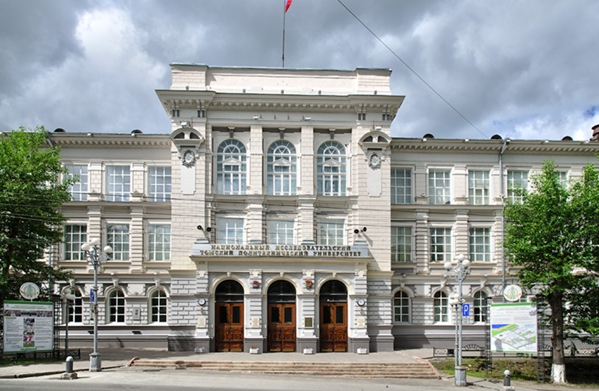

Чем знаменит Томск?
Статус
«Сибирских Афин»
Томск исторически является главным образовательным центром азиатской части России.
- Здесь открыт первый классический университет за Уралом (ТГУ, 1888 г.).
- Здесь открыт первый в Азии технический вуз (ТПУ, 1900 г.).
- Томский государственный университет систем управления и радиоэлектроники (ТУСУР).
- Сибирский государственный медицинский университет.
- Томский государственный педагогический университет.
- Томский государственный архитектурно-строительный университет.
Томск — один из самых студенческих городов мира. Каждый пятый житель — студент, что создаёт уникальную атмосферу молодости, энергии и постоянного развития.
Студенческие городки, библиотеки, научные конференции, фестивали — всё это делает Томск по-настоящему студенческим городом. Ежегодно сюда приезжают тысячи абитуриентов со всей России и из-за рубежа.
Томск является крупным научным центром Сибири. Здесь расположены научно-исследовательские институты, технопарки и особые экономические зоны.
- Томский научный центр СО РАН
- Научный парк ТГУ
- Особая экономическая зона «Томск»
- Более 30 научных организаций

государственный университет (ТГУ, 1888 г.)

технический вуз (ТПУ, 1900 г.)
Благодаря этому Томск стал магнитом для интеллектуальной элиты страны. Сегодня это один из самых студенческих городов мира: каждый пятый житель — студент. Эта концентрация молодежи и ученых создает неповторимую атмосферу свободы, креативности и постоянного развития.